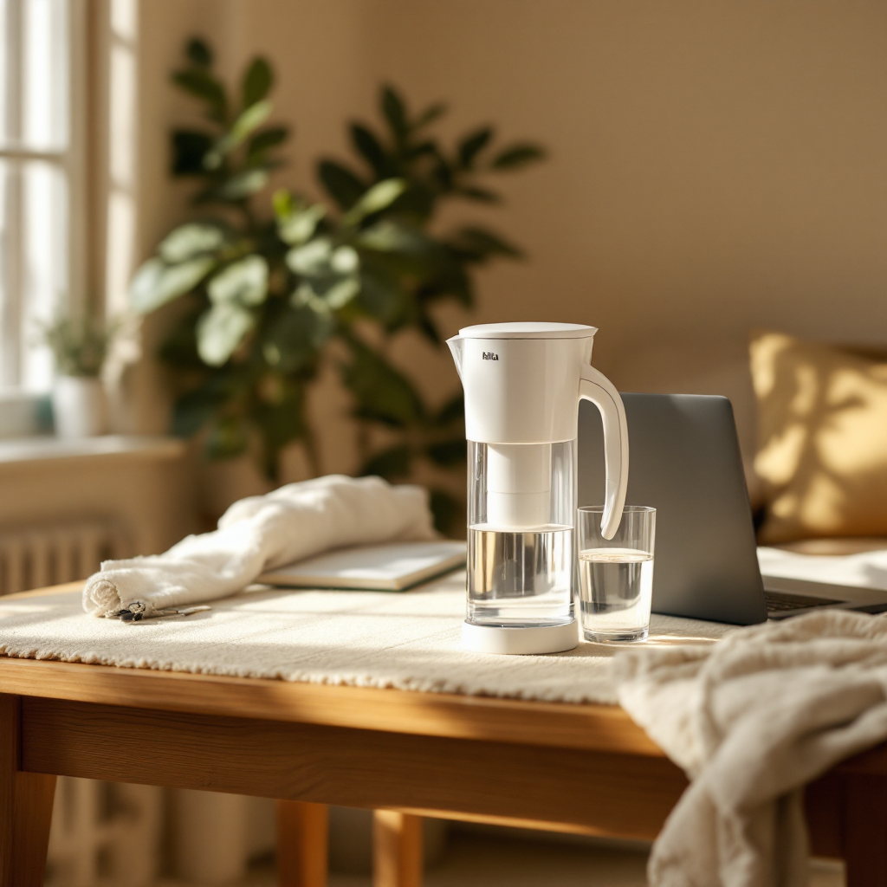

← Back to Shop


Brita Large Water Filter Pitcher
Clean drinking water without the fuss of buying bottles. This 10-cup Brita pitcher fits neatly in a mini fridge, filters tap water in minutes, and each filter lasts two months. It's BPA-free, simple to use, and honestly one of the most practical things any incoming college student can bring to campus. Hydration sorted — one less thing to worry about.
Shop on Amazon →As an Amazon Associate I earn from qualifying purchases at no extra cost to you.